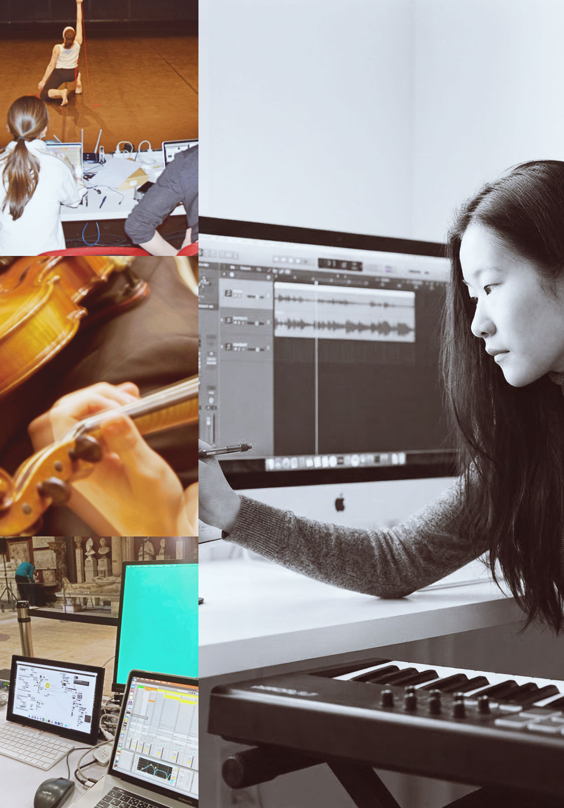
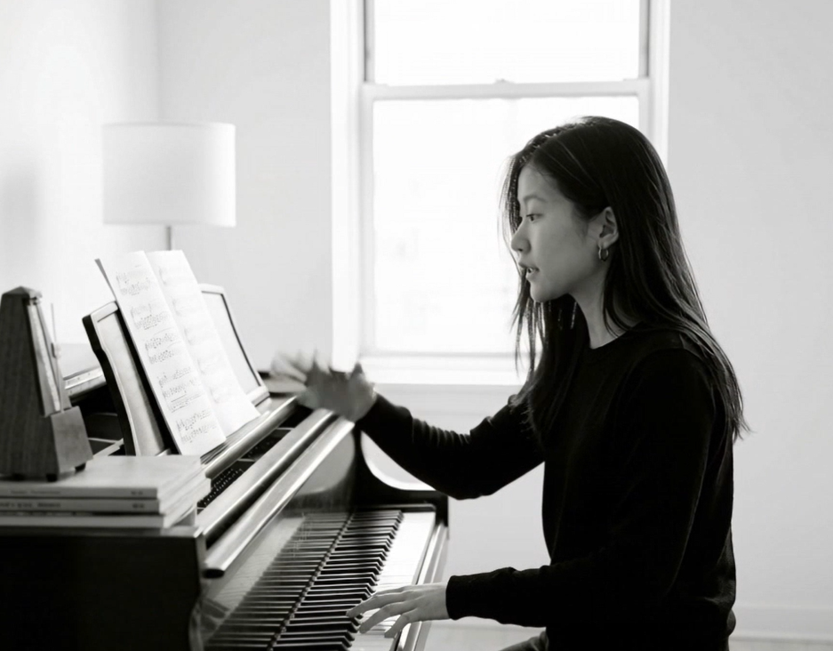

オンライン作曲・ソルフェージュ
DTM・電子音楽レッスン
Atelier
Composition
Son

講師

Sachie Kobayashi — 作曲家、アーティスト、教育者。
東京芸術大学作曲科卒業後、スイス・フランスで学び、パリを中心に活動した経験のある作曲家・アーティストです。クラシック音楽の基礎から、現代音楽、電子音響、サウンドデザイン、Max/MSP、AIを用いた制作まで、一人ひとりの関心や作品に合わせて指導します。
オンラインを「代替手段」ではなく、距離を越えるための選択として選びました。世界中で学んだことを、世界のどこにいる人とも分かち合える。それが、私がオンラインで教える意味だと思っています。
一人の作曲家が運営する小さなアトリエだからこそ、きめ細やかで丁寧な指導と、これまでの音楽経験に触れていただける場でありたいと考えています。
ジュネーブ高等音楽院 音楽教育修士。IRCAM作曲研究課程修了、VR、インスタレーション。スイスの音楽院での指導経験。日本・スイス・フランスでの制作と作品発表。Le Fresnoy、Klangforum Wien、Ensemble Proton Bern、IRCAM との共同制作。
作品
Émergences Résurgences pour orchestre
Digi Ugi
The Cosmic Microwaves Background / Le Fresnoy
レッスン
制作を始める初心者から、プロの方まで。レッスンの内容は、受講者の作品や興味、学びたいことに合わせて決めます。
サウンドテクノロジー・AI音楽、受験・ポートフォリオ
作品、音源、ポートフォリオ、音大・芸大受験や海外音楽院への提出物を検討します。公募や継続プロジェクトも個別に扱います。
考え方
音楽を学ぶことは、音をもう一度聴き直すことから始まる。
— inspired by Pierre Schaeffer
レッスン内容は、受講者の作品や興味、学びたいことに合わせて決めます。楽譜やDAWの操作だけでなく、実際に音を聴きながら、作品に必要な知識と技術を学びます。
作曲やDTMが初めての方も、すでに作品やポートフォリオを制作している方も受講できます。まずは、何を学びたいか、どんな音を作りたいかを伺います。
かつて、高度な音楽教育を受けるには、特定の都市や学校に通うという物理的な条件がありました。私はオンラインで教えることで、その距離を越えたいと考えています。
住んでいる国も、普段聴いている音楽のジャンルも関係ありません。クラシック、ポップス、電子音楽、映画音楽、即興。垣根を越えて、音楽について考え、学ぶ質の高い時間を、ここでお渡ししたいのです。
こんな方へ：地方・海外在住で、近くに学べる場所がなかった方／クラシック出身でも、ポップスや電子音楽にも興味がある方／ジャンルを横断して、自分の音楽を考えたい方。
作品を作りながら学ぶ
理論やソフトの操作は、制作中の作品や課題に合わせて学びます。
音を聴くことから始める
音色、響き、空間、時間の感じ方を、実際に音を聴きながら考えます。
制作に使う技術
DAW、Max/MSP、録音、AI、Python、ChatGPT、Codex、電子音響、映像制作などを必要に応じて扱います。
進め方
無料相談
これまでの経験、学びたいこと、使っているソフトや機材について伺います。
個別レッスン
楽譜、音源、DAWプロジェクトなどを使い、必要な理論と技術を学びます。
次の課題
レッスンの内容を振り返り、次回までに取り組むことを決めます。
受講者の声
希望に合わせて丁寧に進めてもらえました
オンラインでも通信環境が安定していて、安心して受講できました。こちらの希望や学びたい内容を丁寧に聞いていただき、レッスンに反映してもらえた点がとても良かったです。
独学で曖昧だった部分が整理できました
自分の現在のレベルや目的に合わせて、必要な内容を整理しながら教えていただけたのが印象的でした。短い時間の中でも、今後どのように学んでいけばよいかが明確になりました。
初めてでも楽しく学べました
限られた時間の中でも、とても分かりやすく丁寧に教えていただきました。初めて学ぶ内容でしたが、楽典の面白さや奥深さを感じることができました。
料金
目的や経験に合わせて、単発または継続のレッスンを選べます。
よくある質問
遠方からでも受講できますか？ジャンルが違っても大丈夫ですか？
はい。レッスンはオンラインのため、遠方や海外からでも受講できます。ジャンルはなんでも歓迎です。ロックから実験音楽まで、さまざまな音楽を学ぶ生徒さんがいます。ご要望にお応えできない場合は、誠実にお答えします。
これから制作を始める段階でも相談できますか？
はい。楽譜、DTM、音楽理論の経験がなくても受講できます。興味のある音楽や、やってみたいことから始めます。
受験やポートフォリオにも対応していますか？
はい。音大・芸大受験、海外音楽院への出願、作品提出、公募、ポートフォリオについてご相談いただけます。専門的な内容は Individual Session または Monthly Atelier で扱います。
単発相談はできますか？
はい。作品の講評、制作方針、ポートフォリオ、機材やソフト選びなど、1回のみのご相談には Individual Session をご利用いただけます。
レッスン後にメールで質問できますか？
Individual Session では、レッスン日から7日以内にお送りいただく短い質問1件に、メールで1回お返事します。楽譜・音源の添削や追加の講評は Text Feedback をご利用ください。
どのソフトに対応していますか？
Reaper、Ableton Live、Logic Pro、Max/MSPなどに対応しています。MIDI・OSC、AI生成ツール、映像を組み合わせた制作もご相談いただけます。